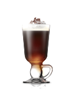

Cardapio

Irish Cofee
Irish coffee (ou café irlandês) é uma bebida a base de café, uísque irlandês, açúcar e chantilly. A bebida foi inventada no porto de Foynes por seu chef Joseph Sheridan na década de 1940 (Foynes foi o precursor do aeroporto de Shannon no oeste da Irlanda).